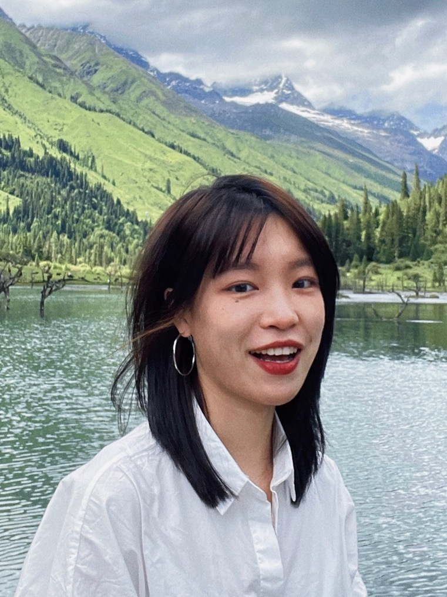

HI, THERE! I'M IRIS.
I'm currently an MSI student at the University of Michigan. Previously, I worked as a product manager at DiDi.
I graduated with a bachelor's degree in Urban Planning. My passion for tackling complex problems and desire for agile design has drawn me from designing physical spaces to the digital design world. It turns out there are many similarities between the two professions. The empathy I have developed through working with different stakeholders has propelled me to become a user-centered designer who is committed to innovation.
When I'm not designing, I cook, bake, watch comedies, go on spontaneous walks, and wonder if I need more camera gear.